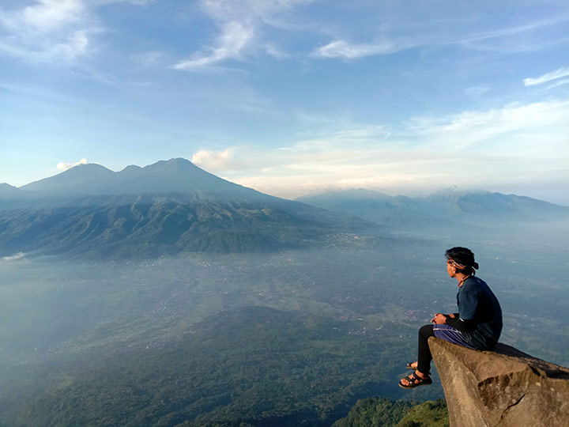
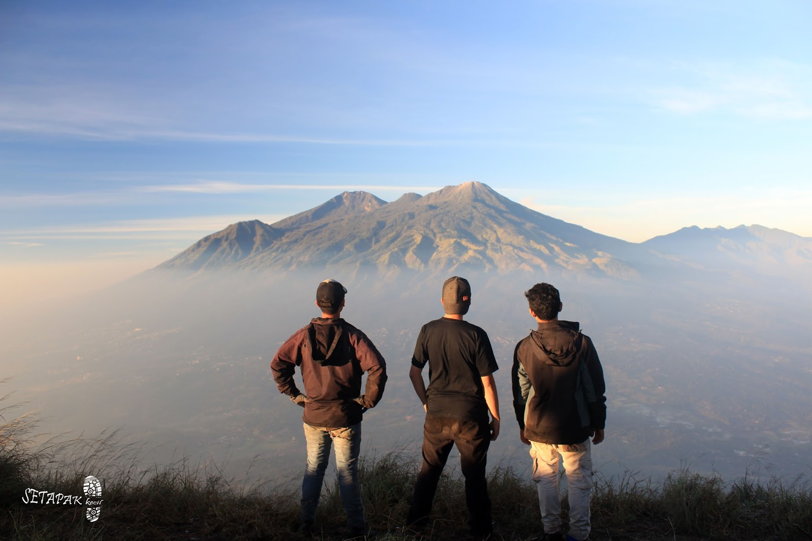

Gunung Penanggungan (nama kuno: Gunung Pawitra) (1.653 m dpl) adalah gunung berapi kerucut dalam kondisi istirahat yang berada di Jawa Timur, Indonesia.

Gunung Penanggungan merupakan gunung kecil yang berada pada satu kluster dengan Gunung Arjuno dan Gunung Welirang yang jauh lebih besar.

Gunung Penanggungan dipandang sebagai gunung keramat, suci, dan merupakan jelmaan Mahameru, gunungnya para dewa.